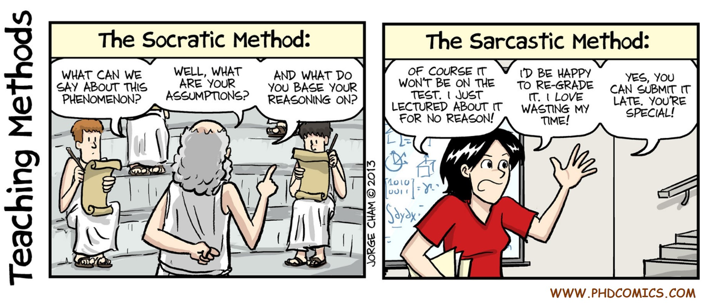

Disclosures:
[D3] Anirudh Iyengar, Swaroop Ghosh, Deepakreddy Vontela & Ithihasa Reddy Nirmala,
Threshold Voltage Defined Switches for Programmable Camouflage Gates (filed June 2016).
[D2] Swaroop Ghosh, and Anirudh Iyengar,
Non-Volatile Flip-Flop with Enhanced-Scan Capability to Sustain Sudden Power Failure (filed March 2015).
[D1] Swaroop Ghosh, and Anirudh Iyengar,
Methods and Apparatus to Build Physically Unclonable Functions Using Spintronic Domain Wall Memory (filed May 2014).
Journals:
[J6] Swaroop Ghosh, Anirudh Iyengar et. al, "Circuits, Systems and Applications of Spintronics"
JETCAS (2017). [link]
[J5] Anirudh Iyengar, Swaroop Ghosh, and Srikant Srinivasan, "Retention Testing Methodology for STTRAM"
D&T (2016). [link]
[J4] Anirudh Iyengar, Swaroop Ghosh, Kenneth Ramclam, Jae Won Jang and Cheng Wei Lin, "Spintronic PUFs for Security, Trust and Authentication" JETC
(Special Issue on Secure and Trustworthy Computing), (accepted), 2015.
[J3] Anirudh Iyengar, Swaroop Ghosh, and Jae Won Jang, "MTJ-Based State Retentive Flip-Flop With Enhanced-Scan Capability to Sustain Sudden Power Failure."
TCAS-I (2015). [link]
[J2] Seyedhamidreza Motaman, Anirudh Iyengar, and Swaroop Ghosh, Domain Wall Memory layout, circuits and synergistic systems, TNANO, 2014.
Impact Factor: 1.62. [link]
[J1] Anirudh Iyengar, Swaroop Ghosh, Kenneth Ramclam, "Domain Wall Magnets for Embedded Memory and Hardware Security",
JETCAS, 2014. [link]
Conferences:
[C7] Anirudh Iyengar, Swaroop Ghosh, Nitin Rathi & Helia Naeimi Side Channel Attacks on STTRAM and Low-Overhead Countermeasures (DFT), 2016. (accepted)
[C6] Anirudh Iyengar & Swaroop Ghosh, Authentication of Printed Circuit Boards, International Symposium for Testing and Failure Analysis (ISTFA), 2016. (accepted)
[C5] Anirudh Iyengar, and Swaroop Ghosh, Threshold Voltage-Defined Switches for Programmable Gates, GOMACTech, 2016.
[C4] Nitin Rathi, Swaroop Ghosh, Anirudh Iyengar and Helia Naeimi, Data Privacy in Non-Volatile Cache: Challenges, Attack Models and Solutions, ASPDAC, 2016.
[C3] Seyedhamidreza Motaman, Anirudh Iyengar, and Swaroop Ghosh, "Synergistic circuit and system design for energy-efficient and robust domain wall caches." ISLPED, 2014.
[link]
[C2] Anirudh Iyengar, Kenneth Ramclam, and Swaroop Ghosh, "DWM-PUF: A Low-overhead, Memory-based Security Primitive". Symposium on Hardware-Oriented Security and Trust HOST 2014.
[link]
[C1] Anirudh Iyengar, and Swaroop Ghosh, Modeling and analysis of domain wall dynamics for robust and low-power embedded memory, IEEE Design Automation Conference DAC 2014.
[link]
Posters & Presentations:
[P8] Anirudh Iyengar Overview of Emerging Memory Technologies and its Application to Hardware Security, Intel Corp. (SeCoE), 2016.
[P7] Anirudh Iyengar Spintronic memory towards Secure and Energy-Efficient Computing, IEEE Design Automation Conference (SigDA PhD Forum), 2016.
[P6] Anirudh Iyengar, Deepakreddy Vontela, Ithihasa Reddy Nirmala & Swaroop Ghosh, A Novel Threshold Voltage Defined Switch for Circuit Camouflaging, IEEE European Test Symposium (ETS), 2016.
[P5] Anirudh Iyengar, Fengchao Zhang, Swaroop Ghosh & Swarup Bhunia, Split-Manufacturing of Printed Circuit Boards, IEEE Design Automation Conference (DAC), 2016.
[P4] Anirudh Iyengar & Swaroop Ghosh, Threshold Voltage-Defined Switches for Programmable Gates, Government Microcircuit Applications & Critical Technology Conference (GOMACTech), 2016.
[P3] Anirudh Iyengar, Swaroop Ghosh, Deepakreddy Vontela & Ithihasa Reddy Nirmala, Threshold Defined Logic Engines And Applications, Florida Institute for Cybersecurity Research (FICS), 2016.
[P2] Anirudh Iyengar, Kenneth Ramclam, Jae-Won Jang & Cheng Wei Lin, Spintronic PUFs for Security, Trust and Authentication, Cyber Security Awareness Week Conference (CSAW), 2014.
[P1] Anirudh Iyengar, Nitin Rathi & Swaroop Ghosh, Static and Dynamic Current Throttling for Improved Oxide Lifetime of STTRAM Arrays, IEEE Design Automation Conference (DAC), 2015.